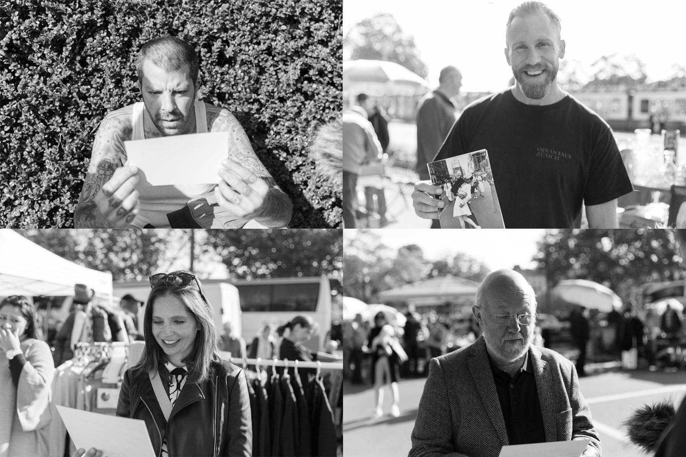
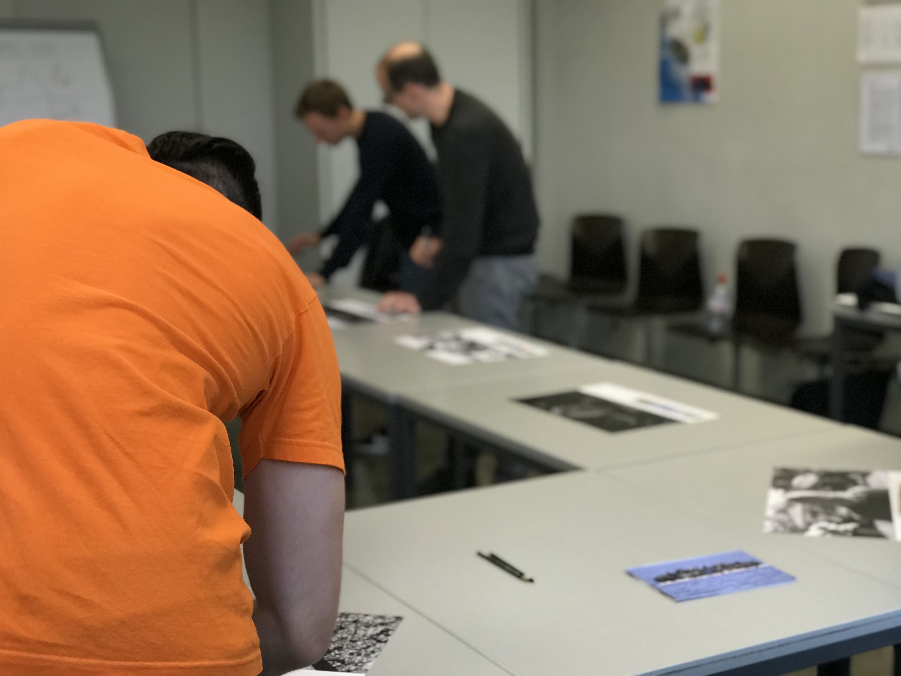

Zusammenfassung vom Modul: Experimentelles Erzählen von Matthias Koch
Diese Darstellung soll eine Übersicht, zu dem erarbeiteten Inhalt des Faches, experimentelles Erzählen aufzeigen.
Experimentelles Erzählen Einstieg
Einstieg experimentelles Erzählen
Am ersten Tag, als wir das erste Mal das Modul «experimentelles Erzählen» hatten, lernten wir unseren Dozenten, Basil Vogt, kennen. Basil Vogt ist ein Spezialist für Trick- und Animationsfilme. Er ist ein Profi im experimentellen Erzählen.
Dies hat sich bereits am ersten Tag erwiesen. Mit Hilfe von Basil haben wir eine kleine Kurzgeschichte erfunden, in welcher wir eine Technik von ihm angewandt haben. Die Aufgabe war es, als Menschen eine Kamera zu imitieren. Mit geschlossenen Augen wurden
wir an einen Ort geführt. Dort angekommen durften wir für 10 Sekunden unsere Augen öffnen, damit wir uns das Gesehene einprägen konnten. Danach musste jeder innerhalb meiner Gruppe das Gesehene skizzieren.
Weiter lesen.

Eine eigene experimentelle Erzählung.
Am zweiten Tag, an welchem wir das Modul experimentelles Erzählen hatten, nahmen wir uns viel Zeit dafür, Möglichkeiten aufzuschreiben, welche es gibt, um eine Geschichte zu erzählen.
Jeder Schüler hat Stichworte, welche seine Ideen von einer experimentellen Erzählung zum Ausdruck brachten, aufgeschrieben. Viele Arten von Geschichten und Experimenten kamen zusammen und es wurde schnell deutlich, welche Konzepte zueinander passten oder sich verbinden liessen.
Weiter lesen.Wir haben ein Problem.
Basil, unser Lehrer, informierte uns darüber, dass wir am Samstagmorgen, dem 16.9.2017, mit dem Schiff auf den Zürichsee gingen, um Material für unsere Experimente zu sammeln. Wir machten uns also am Samstagmorgen auf den Weg zum Schiff. Als wir an der Anlegestelle ankamen, breitete sich in uns eine gewisse Skeptik aus, denn aufgrund des schlechten Wetters waren unsere Mitschüler fast die einzigen Passagiere auf dem Schiff. Die Stimmung auf dem Schiff war ebenso zu intim, um mit unserem Experiment zu stören. Weiter lesen.

Neuer Tag neues Glück.
Samstag, 23.09.2017, Auf ein Neues!
Lars, Stephanie und ich machten uns auf den Weg zum Flohmarkt am Bürkliplatz, gewappnet mit einem Dutzend Bilder, einer Kamera und einem Mikrofon. Wir hatten Glück, denn es war ein sonniger, schöner Tag. Die Stimmung am Flohmarkt war sehr gut.
Auswertung des Experiments.
In der Schule angekommen, haben wir die Bilder des Tages angesehen und die Aufgaben für die künftigen Wochen verteilt, da die Herbstferien anstanden.
Ebenfalls haben wir einen Zeitplan für die nächsten Wochen erstellt.
Vom ersten Eindruck der Bilder waren wir sehr positiv überrascht. Einige der Emotionen waren den Passanten sehr klar ins Gesicht geschrieben und andere haben eine komplett andere Reaktion gezeigt als erwünscht.
Endprodukt.
Am Samstagmorgen, dem 28. Oktober 2017, haben wir unser Experiment der Klasse, in Form einer kleinen Ausstellung präsentiert.
Wir haben uns im Voraus viele Gedanken darüber gemacht, welches die richtige Form ist, um unsere Ergebnisse zu präsentieren. Vom Memorie über Quiz kamen uns viele Ideen in den Sinn, doch wir wurden uns einig, dass die Arbeit am besten in Form einer Ausstellung präsentiert wird. Zu der Ausstellung wollen wir mit unseren Mitschülern ein kleines Experiment durchführen. Können sie anhand der Portraits erkennen, welches Bild ihnen gezeigt wurde?
